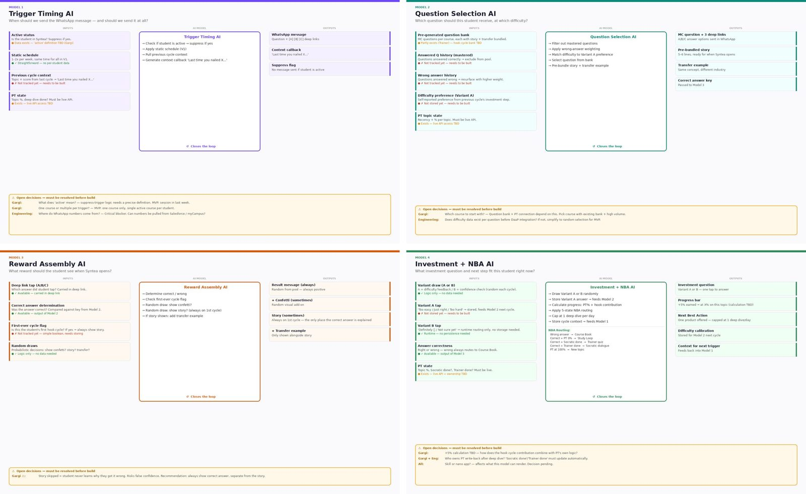
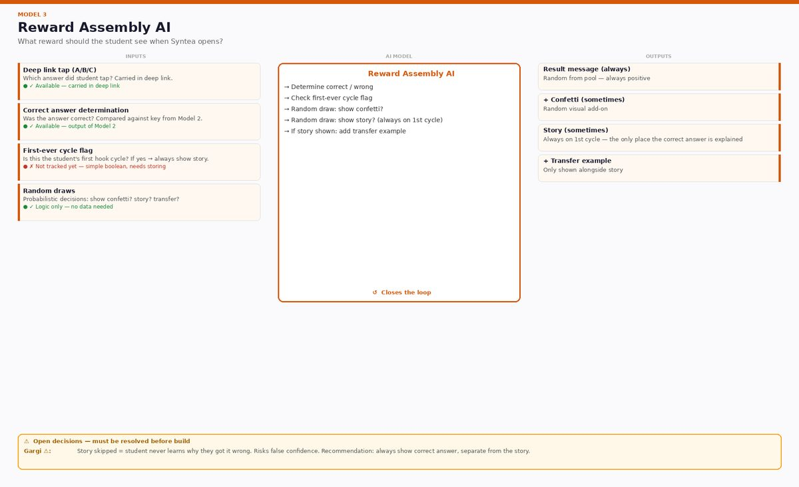
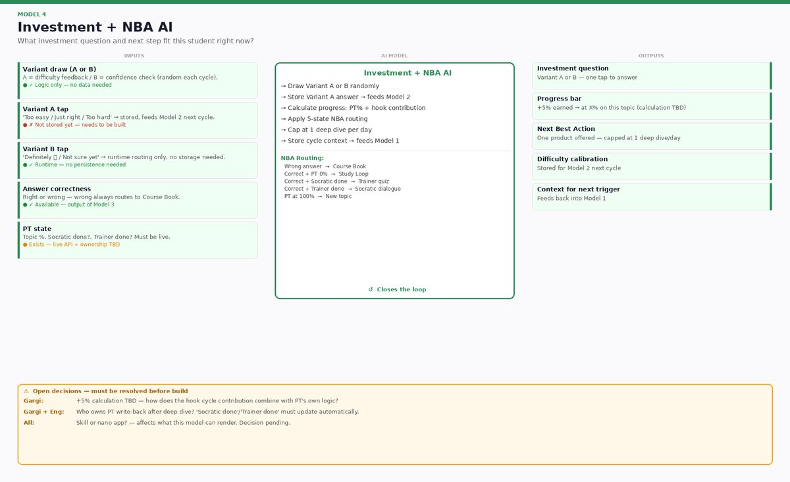
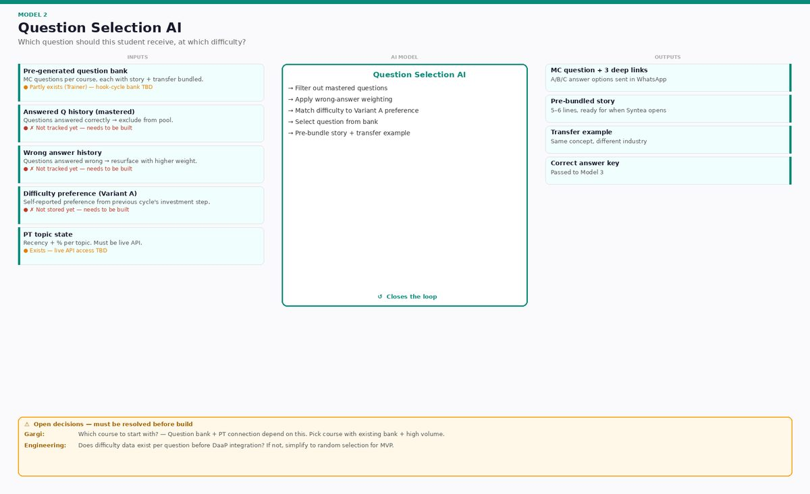

IU International University · Syntea · 2026 · UX Lead
Building a study habit: turning a product idea into a system a team could build
Students opened Syntea in the week before an exam and rarely before. Product wanted a habit loop: a short reminder, a two-minute task, a reward, a reason to come back. The idea was clear. What nobody had yet was a picture of the decisions behind it.

The problem
For the people using it
A student who only meets the companion under exam pressure never gets the calmer, more useful version of it. Reminders that arrive at the wrong moment, or that play on anxiety, make it worse.
For the business
Retention is decided in the first weeks. A loop that brings students back twice a week was a top priority for the quarter, but engineering had a concept, not a specification.
Project detail
How I worked
Take the concept apart into decisions
The habit loop makes four decisions for a student: when to reach out, what to ask, how to reward, what to offer next. I drew each as inputs, logic and outputs, and marked which data we had and which we did not. Engineering got a dependency checklist instead of a wish list.

Set the guardrails before the features
No reminders that play on exam anxiety. No shaming a wrong answer. No profiling students without their consent. Written into the blueprint, so they were requirements, not a review comment later.

Cut the pilot to what needs judgement
A state machine can send a message on Tuesday. It cannot hold a two-turn conversation about a student’s own situation. The first pilot kept only that part, and I wrote down what the pilot deliberately was not, so nobody built the rest by accident.

Write the words, then test them
I wrote the message rules (no urgency, no guilt, no motivational filler: the curiosity gap is the motivation) and the prompt itself, then ran eight scenarios on the dev build before anyone else saw them.

What it changed
What I took from it
A diagram that shows the decisions is worth more to an engineering team than a beautiful flow. It also makes the ethics discussable: you can point at the box where a student could be nudged at the wrong moment.